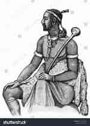

Welcome to one of the greatest cultures in the world,"The Basotho Culture" where tradition and heritage come alive.The main purpose of this website is to explore interesting heritage and traditions of the Basotho nation.The Basotho people hailing from the beautiful kingdom of Lesotho are known for their warm hospitality,rich customs,and stunning natural surroundings.From the intricate designs of traditional blankets to rhythermic beats of their music and dance,Basotho culture is a treasure trove of unique experiences and unforgettable scenes.
As we explore this fascinating culture,we will discover the traditional clothes,crafts and arts as well as their music and dance that shape the lives of the Basotho people and make their culture so distinctively special.
The picture above shows the founder and the paramount chief of the Basotho nation. His name is King Moshoeshoe I,he was born at Mankhoaneng in Botha-Bothe district,he was born in 1786 and sadly died on March 11 1870, and this day is celebrated every year in this culture to commemorate his death and legacy.His name will never be forgotton in this nation because he was known for ruling with love and wisdom in this nation.His father was Peete and he was eaten by the canibals when they were moving from Mankhoaneng to Thaba-Bosiu to find shelter.Even though the canibals killed his father he never fought with them but instead he game them cows to eat to potray to them what they have to eat and that really showed wisdom from him.
He defended his kingdom against European colonization and neighboring tribes,showcasing his strategic and diplomatic skills.He also united various clans and refugees,creating a cohesive nation that would become the Kingdom of Lesotho.